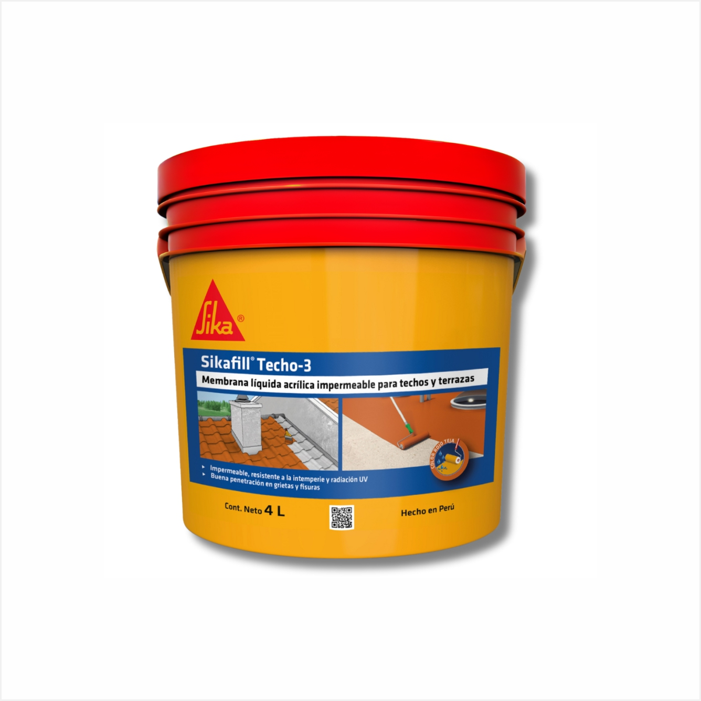

Impermeabilizante para techos SikaFill Techo-3, 20 L

Producto de aplicación superficial diseñado para ayudar a proteger cubiertas frente a la penetración del agua, siguiendo las instrucciones del fabricante. Se presenta en un envase de gran capacidad que puede agruparse en cajas o sobre pallets para su distribución.